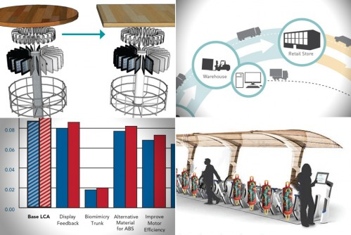

Natural Leadership
Eco-careers
Visual Communications for Sustainability

Biomimicry
Design Rules for Sustainability

Green Graphic & Packaging Design
Background Stories

Innovation & Entrepreneurship
Green Redesigns by Virtual Teams at MCAD

About the MA Program
Educating Global Change Agents

About the MA Program
Happy Holidays!

Innovation & Entrepreneurship
Designers Emerge as Entrepreneurs

Natural Leadership
The Time to Reap

Natural Leadership
Becoming a Creative Leader